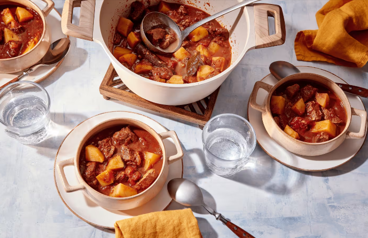

Rezepte zum Mittagessen
- Griechischer Eintopf
 - Klassische Kürbissuppe

- Steak Taco
Entdecke den Geschmack von Leckerem hausgemachten Griechischen Eintopf!
dich von den Aromen des Mittelmeers verführen mit unserem hausgemachten Griechischen Eintopf. Herzhaftes Gemüse und zarte Fleischstücke vereinen sich zu einem wahren Geschmackserlebnis, das deine Sinne auf eine kulinarische Reise entführt.
Entdecke die herbstliche Wärme der klassischen Kürbissuppe!
Tauche ein in die köstliche Welt der Herbstküche mit unserer klassischen Kürbissuppe. Zart gerösteter Kürbis, verfeinert mit aromatischen Gewürzen und einer cremigen Konsistenz, entführt dich in eine Welt voller Gemütlichkeit und Genuss.
Entdecke den Geschmack von saftigen Steak Tacos!
Tauche ein in die Welt der mexikanischen Aromen mit unseren saftigen Steak Tacos. Zart gegrilltes Steak, knackiges Gemüse und würzige Gewürze vereinen sich zu einem Geschmackserlebnis, das deine Sinne verzaubern wird.